May 18 - 22, 2017
| We met our Japanese friend Yuta at the ELS center in OKC in the
spring of 2017 and immediately hit it off with him. He shared our
love of the outdoors and had a great spirit for adventure. His wife
Mai joined him in OKC later and as we began our move to Montana, they decided to
visit us there. We had many great adventures together exploring
beautiful Montana together. |
|
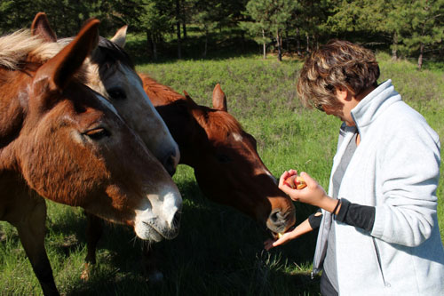 |
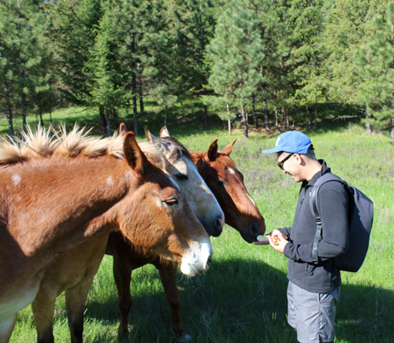 |
| Here we share apples with our neighbor's horses and mule. | They are big fans of this practice. |
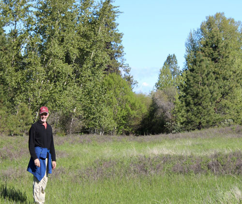 |
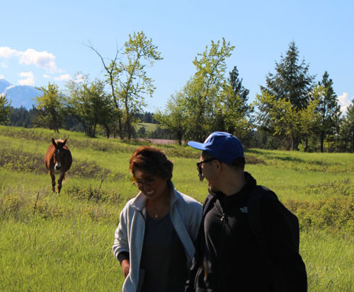 |
| Handsome guy leading the way. | They followed us for quite some time, just in case we had more apples. |
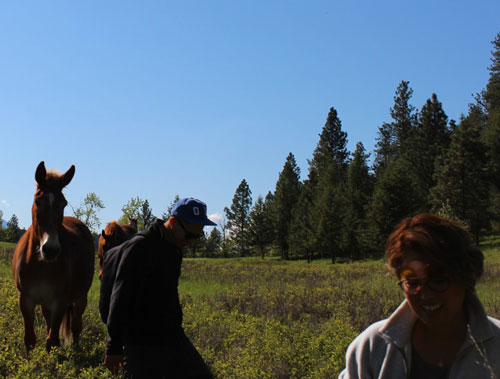 Yep, still following. |
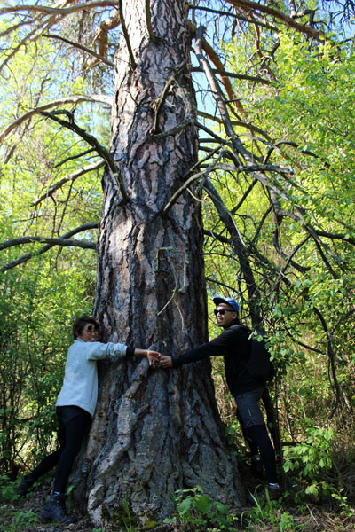 |
| Checking out the HUGE Ponderosa Pine in our ravine. It's a beauty. | |
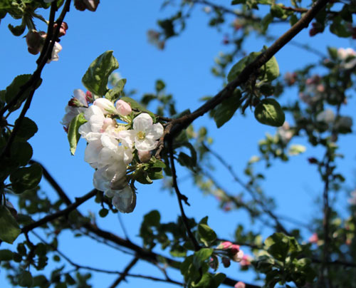 |
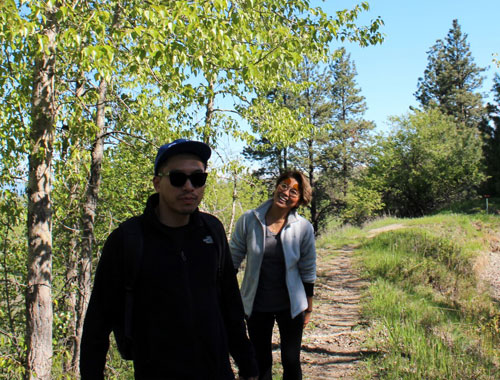 |
| Apple blossoms, preparing to make one of the most prolific apple crops we've seen. | Happy friends on the trail beside our house |
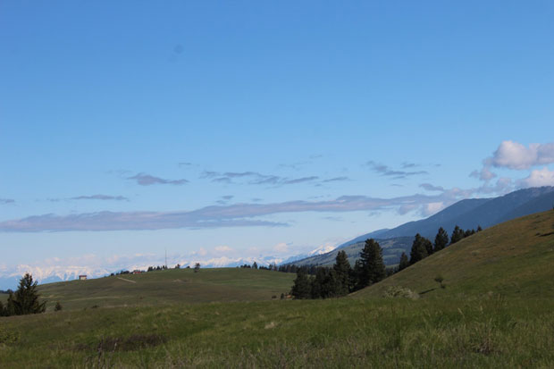 |
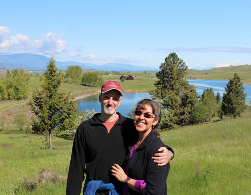 |
| There are snowy Canadian Rockies in the left side of this picture, but they are hard to see here. | Me & E and our house between us. |
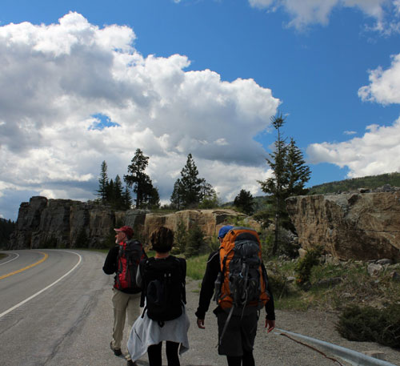 |
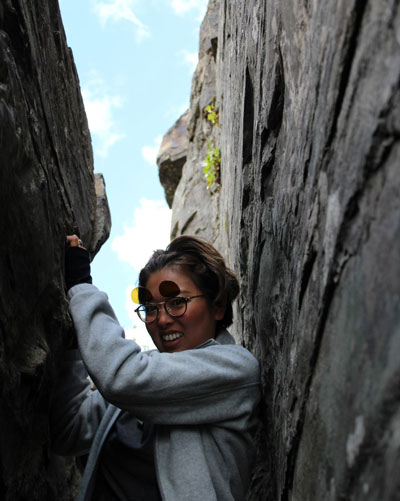 |
| We only had the pleasure of Eric's company for half of the trip, so we made
sure to get in some rock climbing up front. |
Mai heading down to the climbing area. |
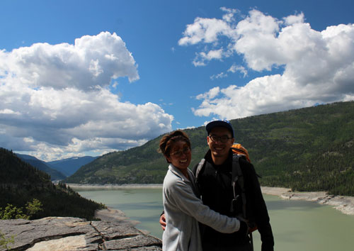 In front of Lake Koocanusa. The lake is down to prepare for spring runoff. |
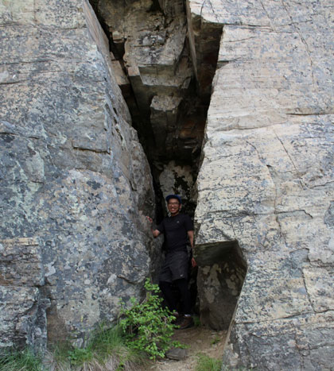 |
| Hiding in this cleft in the rock was just a joke now, but we all ended up there later out of necessity in a surprise rain shower. |
|
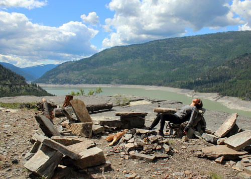 Relaxing on the stone furniture that was built by climbers before us |
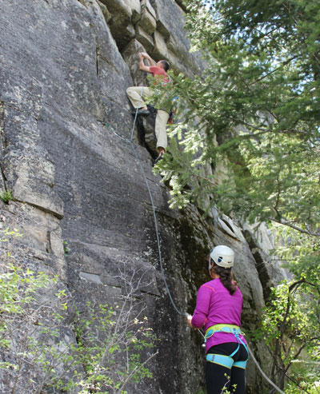 |
| Eric putting up the first route with me belaying | |
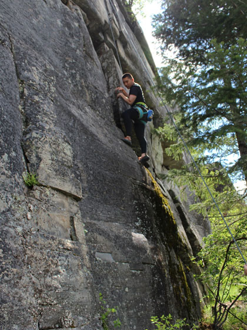 |
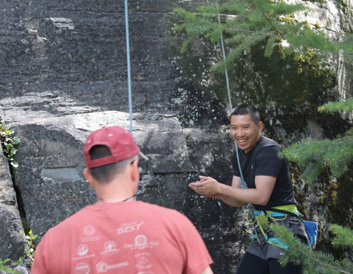 I love to catch that "I survived" expression on a person after a climb. |
| Yuta on his second climbing trip with Eric. The first was in the Wichita Mtns in Oklahoma. | |
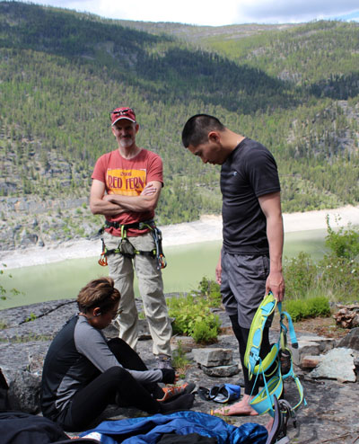 Supervising as Mai gets ready for her first-ever climb |
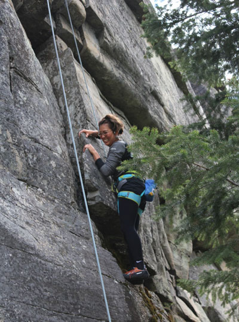 |
| She's doing great! | |
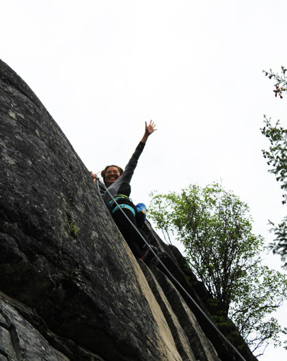 |
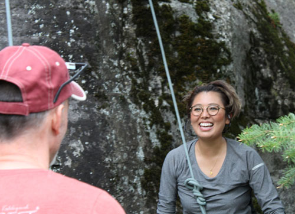 There's that expression again! |
| At the top - woo hoo! | |
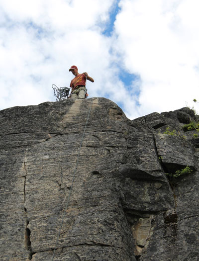 Eric setting up another route |
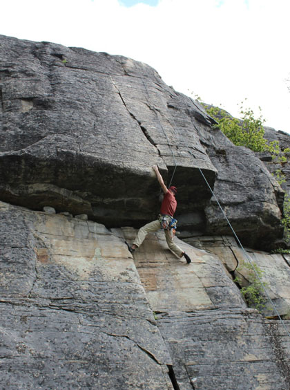 |
| Eric playing around before he turns it over to Yuta and Mai | |
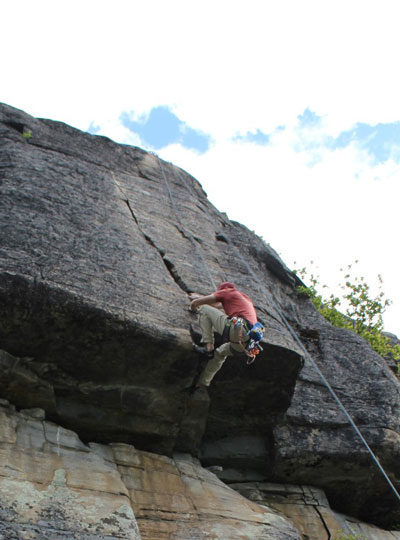 |
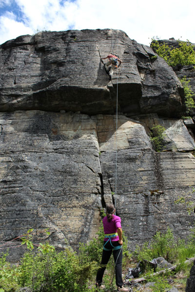 |
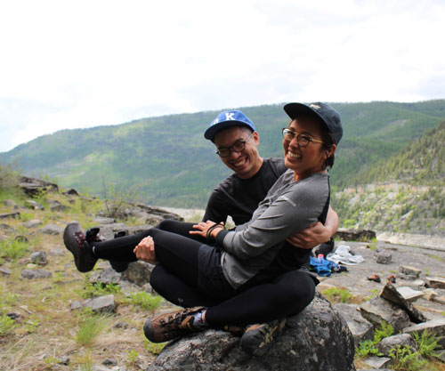 |
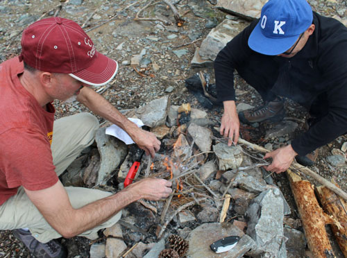 |
| Yuta has some great balance! | After the rain squall passed over, we started working on lunch. Here the boys play with fire. |
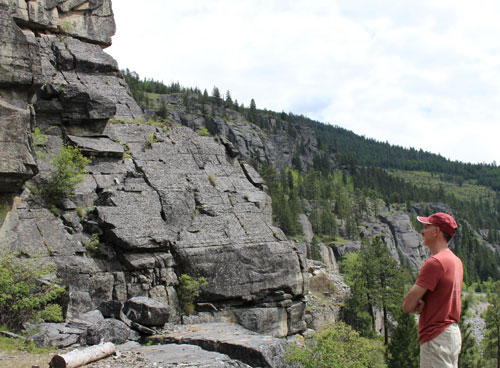 |
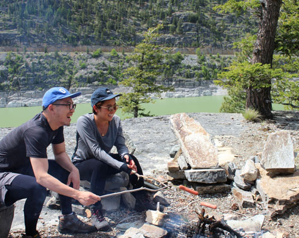 |
| Eric can't stop staring at the rock, mentally climbing everything. | This was their first experience of roasting hot dogs over a fire - too fun! |
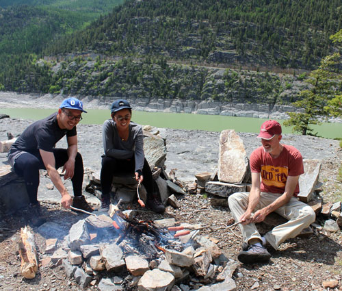 |
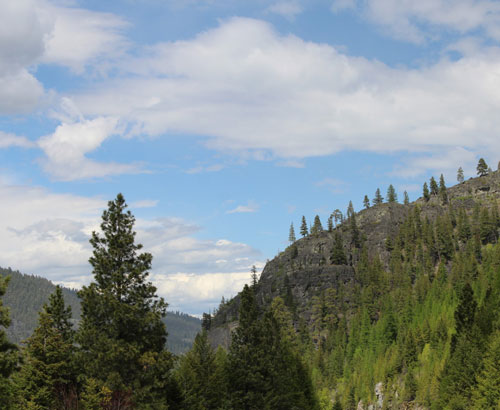 |
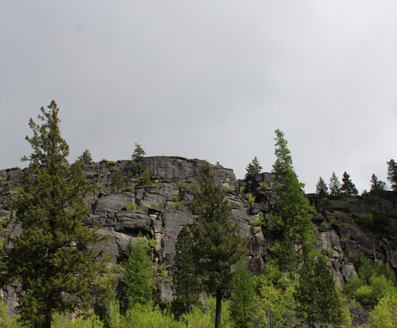 |
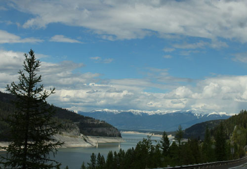 |
| Now we've left the climbing area and are going to check out the bridge over Lake Koocanusa | |
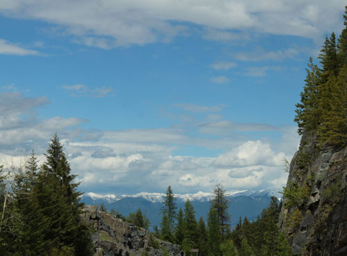 |
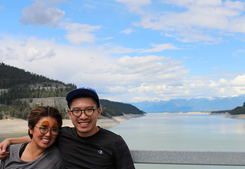 |
| Taken from the bridge | |
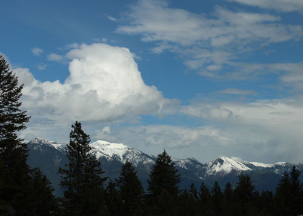 |
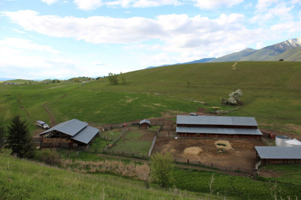 |
| Now we're taking a walk around the "Casazza Compound" - the
adjoining properties of many family members. This picture shows the D-C Ranch, where the Casazza boys grew up. |
|
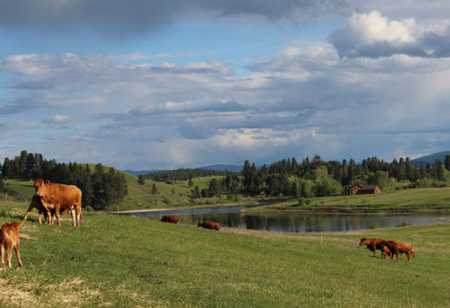 |
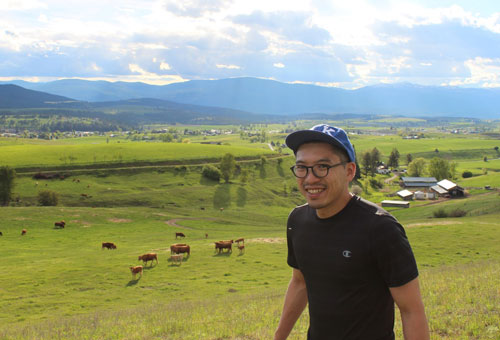 |
| This picture shows happy cows, Costich Lake, and our house. | Here is Yuta with the D-C Ranch behind him. |
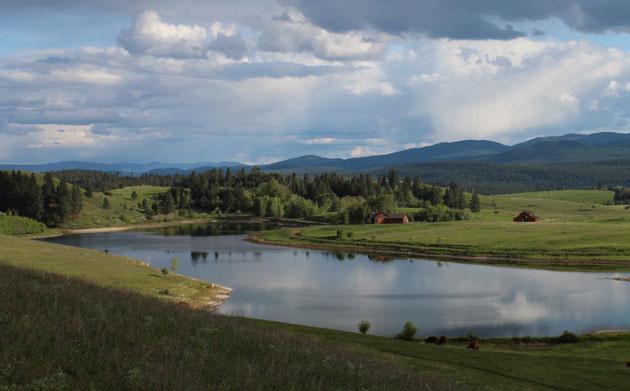 |
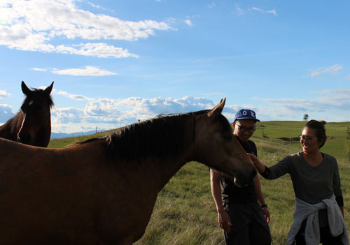 |
| A view of our house and barn from the north end of Costich Lake. | Petting the Casazza horses. We didn't have apples with us this time. |
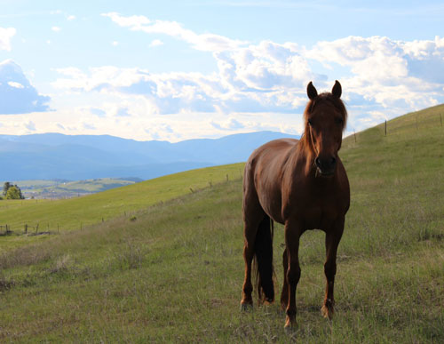 |
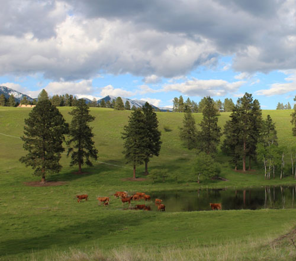 |
| Cows enjoying Dan's picturesque pond. | |
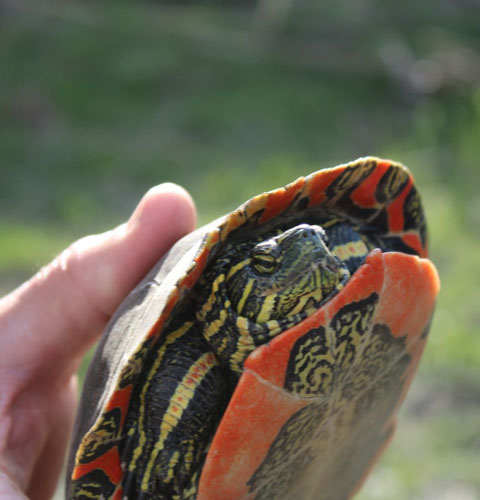 |
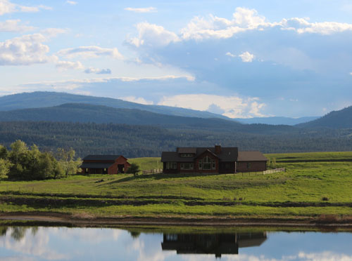 |
| Eric found this cute guy along our walk. | Our house from straight across the lake. |
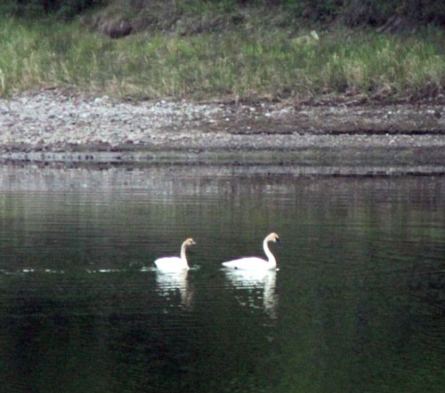 |
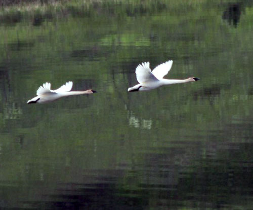 |
| We don't see swans often on the lake, so it was a treat to see this pair. | They didn't stay long, but they were beautiful to watch. |
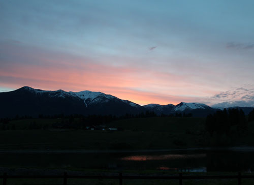 |
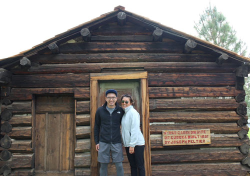 |
| Lovely sunrise | At the historic village in Eureka. This was the first cabin built in the area. |
| Be prepared! | We were surprised that these deer would cross the creek with it running so high. |
| Beaver dam | At Stillwater Canyon, not climbing, just enjoying the area on our way to take Eric to the airport. |
|
Group picture |
|
| The water was COLD! | |
| You can't keep this man off the rocks | Or from balancing on dangerous things. He is my daredevil. |
| After depositing Eric at the airport, we visited Kootenai Falls near Libby, MT. | The river was running so high you could hardly see the falls, but they felt very powerful. |
| The falls get a thumbs up! | The swinging bridge over the river |
| Yuta & Mai are on the bridge here, but it is a little hard to see them. | |
|
Sunset over Lake Koocanusa on the drive back to Eureka. |
|
| After some dinner and rest, we headed out to hear a bluegrass band who were playing in town. | |
| The next morning, Yuta noticed this deer swimming in the lake. | Making his exit. We don't usually see so many deer in the water as we did this week. |
| Feisty LOVES lettuce. Usually we give her a little if
she's in the kitchen when we make a salad. Here she gets spoiled by being hand-fed lettuce while she lays in the sun on the porch. |
Our last full day together was spent at church and then Glacier
Park. Here we stop for a picnic in Columbia Falls before heading to the park. |
| Our picnic spot | They've discovered the joys of Kettle Corn! |
| In the park, we joined up with Jeb, Amy, and Aubrey for a bike ride. | This is my favorite thing to do up here. The Going
to the Sun road is closed to cars until early July, so you can bike through this beautiful scenery and really soak it in. |
|
So beautiful - and if only I could capture the smell of the air and the sound of the river, then you'd know why I love this so much. |
|
| Our gang being dwarfed by the mountains above us. | |
| Me with Amy, Jeb, and Aubrey | |
| I had to get this picture, as the Casazza boys are ALWAYS
pointing! |
Aubrey is "over lith it" (as my other nephew Brodie
likes to say.) But they convinced her to go just a little further. |
| Jeb's crew, minus Madison and Colter who are off doing teenager things. | |
| I look like I'm about to take the Nestea Plunge off the bridge! | Aubrey, running from her dad's teasing |
| Mom, getting her safe before the ride out. | |
| This waterfall was sometimes encased in ice and sometimes visible as water. Beautiful! | |
| Happy bikers | Stopping for a look at some falls. |
|
Here Yuta & Mai are hard to see on the bridge over McDonald Creek. |
|
| We think this was a large coyote, but we don't really know. I left my shoe in for scale. | |
| Yuta dangling his legs over the cliff above some falls. | Don't push him in! |
|
Lake McDonald |
|
| The water is crystal clear and the rocks are very multi-colored. It is lovely. | |
| Taking a moment to relax on the shore of Lake McDonald | On our way out of the park |
| I wore them out completely! The next day they flew home, happy and rested. | |